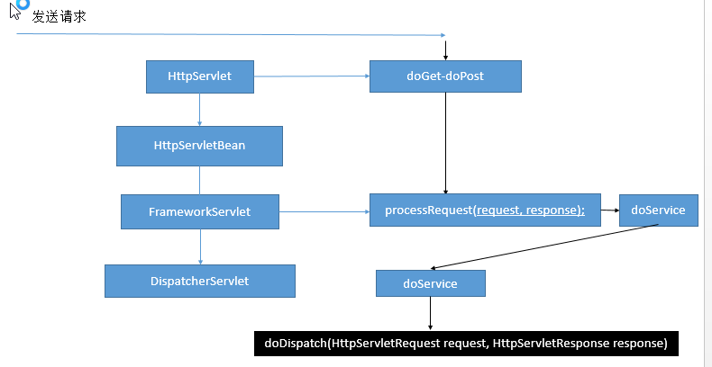

1、前端控制器的架构？DispatcherServlet；

2、doDispatch()详细细节：
protected void doDispatch(HttpServletRequest request, HttpServletResponse response) throws Exception {
HttpServletRequest processedRequest = request;
HandlerExecutionChain mappedHandler = null;
boolean multipartRequestParsed = false;
WebAsyncManager asyncManager = WebAsyncUtils.getAsyncManager(request);
try {
ModelAndView mv = null;
Exception dispatchException = null;
try {
//1、检查是否文件上传请求
processedRequest = checkMultipart(request);
multipartRequestParsed = processedRequest != request;
// Determine handler for the current request.
//2、根据当前的请求地址找到那个类能来处理；
mappedHandler = getHandler(processedRequest);
//3、如果没有找到哪个处理器（控制器）能处理这个请求就404，或者抛异常
if (mappedHandler == null || mappedHandler.getHandler() == null) {
noHandlerFound(processedRequest, response);
return;
}
// Determine handler adapter for the current request.
//4、拿到能执行这个类的所有方法的适配器；（反射工具AnnotationMethodHandlerAdapter）
HandlerAdapter ha = getHandlerAdapter(mappedHandler.getHandler());
// Process last-modified header, if supported by the handler.
String method = request.getMethod();
boolean isGet = "GET".equals(method);
if (isGet || "HEAD".equals(method)) {
long lastModified = ha.getLastModified(request, mappedHandler.getHandler());
if (logger.isDebugEnabled()) {
String requestUri = urlPathHelper.getRequestUri(request);
logger.debug("Last-Modified value for [" + requestUri + "] is: " + lastModified);
}
if (new ServletWebRequest(request, response).checkNotModified(lastModified) && isGet) {
return;
}
}
if (!mappedHandler.applyPreHandle(processedRequest, response)) {
return;
}
try {
// Actually invoke the handler.处理（控制）器的方法被调用
//控制器（Controller），处理器（Handler）
//5、适配器来执行目标方法；将目标方法执行完成后的返回值作为视图名，设置保存到ModelAndView中
//目标方法无论怎么写，最终适配器执行完成以后都会将执行后的信息封装成ModelAndView
mv = ha.handle(processedRequest, response, mappedHandler.getHandler());
}
finally {
if (asyncManager.isConcurrentHandlingStarted()) {
return;
}
}
applyDefaultViewName(request, mv);//如果没有视图名设置一个默认的视图名；
mappedHandler.applyPostHandle(processedRequest, response, mv);
}
catch (Exception ex) {
dispatchException = ex;
}
//转发到目标页面；
//6、根据方法最终执行完成后封装的ModelAndView；转发到对应页面，而且ModelAndView中的数据可以从请求域中获取
processDispatchResult(processedRequest, response, mappedHandler, mv, dispatchException);
}
catch (Exception ex) {
triggerAfterCompletion(processedRequest, response, mappedHandler, ex);
}
catch (Error err) {
triggerAfterCompletionWithError(processedRequest, response, mappedHandler, err);
}
finally {
if (asyncManager.isConcurrentHandlingStarted()) {
// Instead of postHandle and afterCompletion
mappedHandler.applyAfterConcurrentHandlingStarted(processedRequest, response);
return;
}
// Clean up any resources used by a multipart request.
if (multipartRequestParsed) {
cleanupMultipart(processedRequest);
}
}
}
1)、所有请求过来DispatcherServlet收到请求，
2）、调用doDispatch()方法进行处理
1）、getHandler()：根据当前请求地址找到能处理这个请求的目标处理器类（处理器）
根据当前请求在HandlerMapping中找到这个请求的映射信息，获取到目标处理器类
2）、getHandlerAdapter()：根据当前处理器类获取到能执行这个处理器方法的适配器；
根据当前处理器类，找到当前类的HandlerAdapter（适配器）
3）、使用刚才获取到的适配器（AnnotationMethodHandlerAdapter ）执行目标方法;
4）、目标方法执行后会返回一个ModelAndView对象
5）、根据ModelAndView的信息转发到具体的页面，并可以在请求域中取出ModelAndView中的模型数据
三、getHandler()细节：怎么根据当前请求就能找到哪个类能来处理
getHandler()会返回目标处理器类的执行链；
 ；
；HandlerMapping：处理器映射：他里面保存了每一个处理器能处理哪些请求的映射信息；

handlerMap：ioc容器启动创建Controller对象的时候扫描每个处理器都能处理什么请求，保存在HandlerMapping的handlerMap属性中；
下一次请求过来，就来看哪个HandlerMapping中有这个请求映射信息就行了；

protected HandlerExecutionChain getHandler(HttpServletRequest request) throws Exception {
for (HandlerMapping hm : this.handlerMappings) {
if (logger.isTraceEnabled()) {
logger.trace(
"Testing handler map [" + hm + "] in DispatcherServlet with name '" + getServletName() + "'");
}
HandlerExecutionChain handler = hm.getHandler(request);
if (handler != null) {
return handler;
}
}
return null;
}
4、如何找到目标处理器类的适配器。要拿适配器才去执行目标方法

AnnotationMethodHandlerAdapter：能解析注解方法的适配器；
处理器类中只要有标了注解的这些方法就能用；
protected HandlerAdapter getHandlerAdapter(Object handler) throws ServletException {
for (HandlerAdapter ha : this.handlerAdapters) {
if (logger.isTraceEnabled()) {
logger.trace("Testing handler adapter [" + ha + "]");
}
if (ha.supports(handler)) {
return ha;
}
}
throw new ServletException("No adapter for handler [" + handler +
"]: The DispatcherServlet configuration needs to include a HandlerAdapter that supports this handler");
}
5、DispatcherServlet中有几个引用类型的属性；SpringMVC的九大组件；
SpringMVC在工作的时候，关键位置都是由这些组件完成的；
共同点：九大组件全部都是接口；接口就是规范；提供了非常强大的扩展性；
SpringMVC的九大组件工作原理；
/** 文件上传解析器*/
private MultipartResolver multipartResolver;
/** 区域信息解析器；和国际化有关 */
private LocaleResolver localeResolver;
/** 主题解析器；强大的主题效果更换 */
private ThemeResolver themeResolver;
/** Handler映射信息；HandlerMapping */
private List<HandlerMapping> handlerMappings;
/** Handler的适配器 */
private List<HandlerAdapter> handlerAdapters;
/** SpringMVC强大的异常解析功能；异常解析器 */
private List<HandlerExceptionResolver> handlerExceptionResolvers;
/** */
private RequestToViewNameTranslator viewNameTranslator;
/** FlashMap+Manager：SpringMVC中运行重定向携带数据的功能 */
private FlashMapManager flashMapManager;
/** 视图解析器； */
private List<ViewResolver> viewResolvers;
DispatcherServlet中九大组件初始化的地方：
protected void initStrategies(ApplicationContext context) {
initMultipartResolver(context);
initLocaleResolver(context);
initThemeResolver(context);
initHandlerMappings(context);
initHandlerAdapters(context);
initHandlerExceptionResolvers(context);
initRequestToViewNameTranslator(context);
initViewResolvers(context);
initFlashMapManager(context);
}
可以在web.xml中修改DispatcherServlet某些属性的默认配置；
<init-param>
<param-name>detectAllHandlerMappings</param-name>
<param-value>false</param-value>
</init-param>
初始化HandlerMapping
private void initHandlerMappings(ApplicationContext context) {
this.handlerMappings = null;
if (this.detectAllHandlerMappings) {
// Find all HandlerMappings in the ApplicationContext, including ancestor contexts.
Map<String, HandlerMapping> matchingBeans =
BeanFactoryUtils.beansOfTypeIncludingAncestors(context, HandlerMapping.class, true, false);
if (!matchingBeans.isEmpty()) {
this.handlerMappings = new ArrayList<HandlerMapping>(matchingBeans.values());
// We keep HandlerMappings in sorted order.
OrderComparator.sort(this.handlerMappings);
}
}
else {
try {
HandlerMapping hm = context.getBean(HANDLER_MAPPING_BEAN_NAME, HandlerMapping.class);
this.handlerMappings = Collections.singletonList(hm);
}
catch (NoSuchBeanDefinitionException ex) {
// Ignore, we'll add a default HandlerMapping later.
}
}
// Ensure we have at least one HandlerMapping, by registering
// a default HandlerMapping if no other mappings are found.
if (this.handlerMappings == null) {
this.handlerMappings = getDefaultStrategies(context, HandlerMapping.class);
if (logger.isDebugEnabled()) {
logger.debug("No HandlerMappings found in servlet '" + getServletName() + "': using default");
}
}
}
组件的初始化：
有些组件在容器中是使用类型找的，有些组件是使用id找的；
去容器中找这个组件，如果没有找到就用默认的配置；
public String updateBook(@RequestParam(value="author")String author,Map<String, Object> model,
HttpServletRequest request, @ModelAttribute("haha")Book book
)
mv = ha.handle(processedRequest, response, mappedHandler.getHandler());执行目标方法的细节；
||
\/
return invokeHandlerMethod(request, response, handler);
||
\/
protected ModelAndView invokeHandlerMethod(HttpServletRequest request, HttpServletResponse response, Object handler)
throws Exception {
//拿到方法的解析器
ServletHandlerMethodResolver methodResolver = getMethodResolver(handler);
//方法解析器根据当前请求地址找到真正的目标方法
Method handlerMethod = methodResolver.resolveHandlerMethod(request);
//创建一个方法执行器；
ServletHandlerMethodInvoker methodInvoker = new ServletHandlerMethodInvoker(methodResolver);
//包装原生的request, response，
ServletWebRequest webRequest = new ServletWebRequest(request, response);
//创建了一个，隐含模型
ExtendedModelMap implicitModel = new BindingAwareModelMap();
//真正执行目标方法；目标方法利用反射执行期间确定参数值，提前执行modelattribute等所有的操作都在这个方法中；
Object result = methodInvoker.invokeHandlerMethod(handlerMethod, handler, webRequest, implicitModel);
ModelAndView mav =
methodInvoker.getModelAndView(handlerMethod, handler.getClass(), result, implicitModel, webRequest);
methodInvoker.updateModelAttributes(handler, (mav != null ? mav.getModel() : null), implicitModel, webRequest);
return mav;
}
方法执行的细节invokeHandlerMethod
publicfinal Object invokeHandlerMethod(Method handlerMethod, Object handler,
NativeWebRequest webRequest, ExtendedModelMap implicitModel) throws Exception {
Method handlerMethodToInvoke = BridgeMethodResolver.findBridgedMethod(handlerMethod);
try {
boolean debug = logger.isDebugEnabled();
for (String attrName : this.methodResolver.getActualSessionAttributeNames()) {
Object attrValue = this.sessionAttributeStore.retrieveAttribute(webRequest, attrName);
if (attrValue != null) {
implicitModel.addAttribute(attrName, attrValue);
}
}
//找到所有@ModelAttribute注解标注的方法；
for (Method attributeMethod : this.methodResolver.getModelAttributeMethods()) {
Method attributeMethodToInvoke = BridgeMethodResolver.findBridgedMethod(attributeMethod);
//先确定modelattribute方法执行时要使用的每一个参数的值；
Object[] args = resolveHandlerArguments(attributeMethodToInvoke, handler, webRequest, implicitModel);
if (debug) {
logger.debug("Invoking model attribute method: " + attributeMethodToInvoke);
}
String attrName = AnnotationUtils.findAnnotation(attributeMethod, ModelAttribute.class).value();
if (!"".equals(attrName) && implicitModel.containsAttribute(attrName)) {
continue;
}
ReflectionUtils.makeAccessible(attributeMethodToInvoke);
//提前运行ModelAttribute，
Object attrValue = attributeMethodToInvoke.invoke(handler, args);
if ("".equals(attrName)) {
Class<?> resolvedType = GenericTypeResolver.resolveReturnType(attributeMethodToInvoke, handler.getClass());
attrName = Conventions.getVariableNameForReturnType(attributeMethodToInvoke, resolvedType, attrValue);
}
//把提前运行的ModelAttribute方法的返回值也放在隐含模型中
if (!implicitModel.containsAttribute(attrName)) {
implicitModel.addAttribute(attrName, attrValue);
}
}
//再次解析目标方法参数是哪些值
Object[] args = resolveHandlerArguments(handlerMethodToInvoke, handler, webRequest, implicitModel);
if (debug) {
logger.debug("Invoking request handler method: " + handlerMethodToInvoke);
}
ReflectionUtils.makeAccessible(handlerMethodToInvoke);
//执行目标方法
return handlerMethodToInvoke.invoke(handler, args);
}
catch (IllegalStateException ex) {
// Internal assertion failed (e.g. invalid signature):
// throw exception with full handler method context...
throw new HandlerMethodInvocationException(handlerMethodToInvoke, ex);
}
catch (InvocationTargetException ex) {
// User-defined @ModelAttribute/@InitBinder/@RequestMapping method threw an exception...
ReflectionUtils.rethrowException(ex.getTargetException());
return null;
}
}
public java.lang.String com.atguigu.controller.ModelAttributeTestController.updateBook(
java.lang.String,
java.util.Map,
javax.servlet.http.HttpServletRequest,
com.atguigu.bean.Book)
确定方法运行时使用的每一个参数的值
private Object[] resolveHandlerArguments(Method handlerMethod, Object handler,
NativeWebRequest webRequest, ExtendedModelMap implicitModel) throws Exception {
Class<?>[] paramTypes = handlerMethod.getParameterTypes();
//创建了一个和参数个数一样多的数组，会用来保存每一个参数的值
Object[] args = new Object[paramTypes.length];
for (int i = 0; i < args.length; i++) {
MethodParameter methodParam = new MethodParameter(handlerMethod, i);
methodParam.initParameterNameDiscovery(this.parameterNameDiscoverer);
GenericTypeResolver.resolveParameterType(methodParam, handler.getClass());
String paramName = null;
String headerName = null;
boolean requestBodyFound = false;
String cookieName = null;
String pathVarName = null;
String attrName = null;
boolean required = false;
String defaultValue = null;
boolean validate = false;
Object[] validationHints = null;
int annotationsFound = 0;
Annotation[] paramAnns = methodParam.getParameterAnnotations();
//找到目标方法这个参数的所有注解，如果有注解就解析并保存注解的信息；
for (Annotation paramAnn : paramAnns) {
if (RequestParam.class.isInstance(paramAnn)) {
RequestParam requestParam = (RequestParam) paramAnn;
paramName = requestParam.value();
required = requestParam.required();
defaultValue = parseDefaultValueAttribute(requestParam.defaultValue());
annotationsFound++;
}
else if (RequestHeader.class.isInstance(paramAnn)) {
RequestHeader requestHeader = (RequestHeader) paramAnn;
headerName = requestHeader.value();
required = requestHeader.required();
defaultValue = parseDefaultValueAttribute(requestHeader.defaultValue());
annotationsFound++;
}
else if (RequestBody.class.isInstance(paramAnn)) {
requestBodyFound = true;
annotationsFound++;
}
else if (CookieValue.class.isInstance(paramAnn)) {
CookieValue cookieValue = (CookieValue) paramAnn;
cookieName = cookieValue.value();
required = cookieValue.required();
defaultValue = parseDefaultValueAttribute(cookieValue.defaultValue());
annotationsFound++;
}
else if (PathVariable.class.isInstance(paramAnn)) {
PathVariable pathVar = (PathVariable) paramAnn;
pathVarName = pathVar.value();
annotationsFound++;
}
else if (ModelAttribute.class.isInstance(paramAnn)) {
ModelAttribute attr = (ModelAttribute) paramAnn;
attrName = attr.value();
annotationsFound++;
}
else if (Value.class.isInstance(paramAnn)) {
defaultValue = ((Value) paramAnn).value();
}
else if (paramAnn.annotationType().getSimpleName().startsWith("Valid")) {
validate = true;
Object value = AnnotationUtils.getValue(paramAnn);
validationHints = (value instanceof Object[] ? (Object[]) value : new Object[] {value});
}
}
if (annotationsFound > 1) {
throw new IllegalStateException("Handler parameter annotations are exclusive choices - " +
"do not specify more than one such annotation on the same parameter: " + handlerMethod);
}
//没有找到注解的情况；
if (annotationsFound == 0) {
//解析普通参数
Object argValue = resolveCommonArgument(methodParam, webRequest);--
会进入resolveStandardArgument（解析标准参数）
if (argValue != WebArgumentResolver.UNRESOLVED) {
args[i] = argValue;
}
else if (defaultValue != null) {
args[i] = resolveDefaultValue(defaultValue);
}
else {
Class<?> paramType = methodParam.getParameterType();
if (Model.class.isAssignableFrom(paramType) || Map.class.isAssignableFrom(paramType)) {
if (!paramType.isAssignableFrom(implicitModel.getClass())) {
throw new IllegalStateException("Argument [" + paramType.getSimpleName() + "] is of type " +
"Model or Map but is not assignable from the actual model. You may need to switch " +
"newer MVC infrastructure classes to use this argument.");
}
args[i] = implicitModel;
}
else if (SessionStatus.class.isAssignableFrom(paramType)) {
args[i] = this.sessionStatus;
}
else if (HttpEntity.class.isAssignableFrom(paramType)) {
args[i] = resolveHttpEntityRequest(methodParam, webRequest);
}
else if (Errors.class.isAssignableFrom(paramType)) {
throw new IllegalStateException("Errors/BindingResult argument declared " +
"without preceding model attribute. Check your handler method signature!");
}
else if (BeanUtils.isSimpleProperty(paramType)) {
paramName = "";
}
else {
attrName = "";
}
}
}
//确定值的环节
if (paramName != null) {
args[i] = resolveRequestParam(paramName, required, defaultValue, methodParam, webRequest, handler);
}
else if (headerName != null) {
args[i] = resolveRequestHeader(headerName, required, defaultValue, methodParam, webRequest, handler);
}
else if (requestBodyFound) {
args[i] = resolveRequestBody(methodParam, webRequest, handler);
}
else if (cookieName != null) {
args[i] = resolveCookieValue(cookieName, required, defaultValue, methodParam, webRequest, handler);
}
else if (pathVarName != null) {
args[i] = resolvePathVariable(pathVarName, methodParam, webRequest, handler);
}
//确定自定义类型参数的值；还要将请求中的每一个参数赋值给这个对象
else if (attrName != null) {
WebDataBinder binder =
resolveModelAttribute(attrName, methodParam, implicitModel, webRequest, handler);
boolean assignBindingResult = (args.length > i + 1 && Errors.class.isAssignableFrom(paramTypes[i + 1]));
if (binder.getTarget() != null) {
doBind(binder, webRequest, validate, validationHints, !assignBindingResult);
}
args[i] = binder.getTarget();
if (assignBindingResult) {
args[i + 1] = binder.getBindingResult();
i++;
}
implicitModel.putAll(binder.getBindingResult().getModel());
}
}
return args;
}
如果没有注解：
1）、先看是否普通参数（resolveCommonArgument）；----就是确定当前的参数是否是原生API；
@Override
protected Object resolveStandardArgument(Class<?> parameterType, NativeWebRequest webRequest) throws Exception {
HttpServletRequest request = webRequest.getNativeRequest(HttpServletRequest.class);
HttpServletResponse response = webRequest.getNativeResponse(HttpServletResponse.class);
if (ServletRequest.class.isAssignableFrom(parameterType) ||
MultipartRequest.class.isAssignableFrom(parameterType)) {
Object nativeRequest = webRequest.getNativeRequest(parameterType);
if (nativeRequest == null) {
throw new IllegalStateException(
"Current request is not of type [" + parameterType.getName() + "]: " + request);
}
return nativeRequest;
}
else if (ServletResponse.class.isAssignableFrom(parameterType)) {
this.responseArgumentUsed = true;
Object nativeResponse = webRequest.getNativeResponse(parameterType);
if (nativeResponse == null) {
throw new IllegalStateException(
"Current response is not of type [" + parameterType.getName() + "]: " + response);
}
return nativeResponse;
}
else if (HttpSession.class.isAssignableFrom(parameterType)) {
return request.getSession();
}
else if (Principal.class.isAssignableFrom(parameterType)) {
return request.getUserPrincipal();
}
else if (Locale.class.equals(parameterType)) {
return RequestContextUtils.getLocale(request);
}
else if (InputStream.class.isAssignableFrom(parameterType)) {
return request.getInputStream();
}
else if (Reader.class.isAssignableFrom(parameterType)) {
return request.getReader();
}
else if (OutputStream.class.isAssignableFrom(parameterType)) {
this.responseArgumentUsed = true;
return response.getOutputStream();
}
else if (Writer.class.isAssignableFrom(parameterType)) {
this.responseArgumentUsed = true;
return response.getWriter();
}
return super.resolveStandardArgument(parameterType, webRequest);
}
2）、判断是否是Model或者是Map旗下的，如果是将之前创建的隐含模型直接赋值给这个参数；
方法上标注的ModelAttribute注解如果有value值
@ModelAttribute("abc")
hahaMyModelAttribute()
标了 ： attrName="abc"
没标：attrName="";attrName就会变为返回值类型首字母小写，比如void ,或者book;
【@ModelAttribute标在方法上的另外一个作用；
可以把方法运行后的返回值按照方法上@ModelAttribute("abc")指定的key放到隐含模型中；
如果没有指定这个key；就用返回值类型的首字母小写】
{haha=Book [id=100, bookName=西游记, author=吴承恩, stock=98, sales=10, price=98.98], void=null}
如何确定方法的每一个参数的值；
@RequestMapping("/updateBook")
public String updateBook(@RequestParam(value="author")String author,
Map<String, Object> model,
HttpServletRequest request,
@ModelAttribute("haha")Book book
)

标了注解：
保存时哪个注解的详细信息；
如果参数有ModelAttribute注解；
拿到ModelAttribute注解的值让attrName保存
attrName="haha"
没标注解：
1）、先看是否普通参数（是否原生API）
再看是否Model或者Map，如果是就传入隐含模型；
2）、自定义类型的参数没有ModelAttribute 注解
1）、先看是否原生API
2）、再看是否Model或者Map
3）、再看是否是其他类型的比如SessionStatus、HttpEntity、Errors
4)、再看是否简单类型的属性；比如是否Integer，String，基本类型
如果是paramName=“”
5)、attrName=""；
如果是自定义类型对象，最终会产生两个效果；
1）、如果这个参数标注了ModelAttribute注解就给attrName赋值为这个注解的value值
2）、如果这个参数没有标注ModelAttribute注解就给attrName赋值""；
确定自定义类型参数的值；
private WebDataBinder resolveModelAttribute(String attrName, MethodParameter methodParam,
ExtendedModelMap implicitModel, NativeWebRequest webRequest, Object handler) throws Exception {
// Bind request parameter onto object...
String name = attrName;
if ("".equals(name)) {
//如果attrName是空串；就将参数类型的首字母小写作为值 Book book2121;name=book
name = Conventions.getVariableNameForParameter(methodParam);
}
Class<?> paramType = methodParam.getParameterType();
Object bindObject;确定目标对象的值
if (implicitModel.containsKey(name)) {
bindObject = implicitModel.get(name);
}
else if (this.methodResolver.isSessionAttribute(name, paramType)) {
bindObject = this.sessionAttributeStore.retrieveAttribute(webRequest, name);
if (bindObject == null) {
raiseSessionRequiredException("Session attribute '" + name + "' required - not found in session");
}
}
else {
bindObject = BeanUtils.instantiateClass(paramType);
}
WebDataBinder binder = createBinder(webRequest, bindObject, name);
initBinder(handler, name, binder, webRequest);
return binder;
}
SpringMVC确定POJO值的三步；
1、如果隐含模型中有这个key（标了ModelAttribute注解就是注解指定的value，没标就是参数类型的首字母小写）指定的值；
如果有将这个值赋值给bindObject；
2、如果是SessionAttributes标注的属性，就从session中拿；
3、如果都不是就利用反射创建对象；
两件事：
1）、运行流程简单版；
2）、确定方法每个参数的值；
1）、标注解：保存注解的信息；最终得到这个注解应该对应解析的值；
2）、没标注解：
1）、看是否是原生API；
2）、看是否是Model或者是Map，xxxx
3）、都不是，看是否是简单类型；paramName；
4）、给attrName赋值；attrName（参数标了@ModelAttribute("")就是指定的，没标就是""）
确定自定义类型参数：
1）、attrName使用参数的类型首字母小写；或者使用之前@ModelAttribute("")的值
2）、先看隐含模型中有每个这个attrName作为key对应的值；如果有就从隐含模型中获取并赋值
3）、看是否是@SessionAttributes(value="haha")；标注的属性，如果是从session中拿；
如果拿不到就会抛异常；
4）、不是@SessionAttributes标注的，利用反射创建一个对象；
5）、拿到之前创建好的对象，使用数据绑定器(WebDataBinder)将请求中的每个数据绑定到这个对象中；
//确定值的环节
if (paramName != null) {
args[i] = resolveRequestParam(paramName, required, defaultValue, methodParam, webRequest, handler);
}
else if (headerName != null) {
args[i] = resolveRequestHeader(headerName, required, defaultValue, methodParam, webRequest, handler);
}
else if (requestBodyFound) {
args[i] = resolveRequestBody(methodParam, webRequest, handler);
}
else if (cookieName != null) {
args[i] = resolveCookieValue(cookieName, required, defaultValue, methodParam, webRequest, handler);
}
else if (pathVarName != null) {
args[i] = resolvePathVariable(pathVarName, methodParam, webRequest, handler);
}
//确定自定义类型参数的值；还要将请求中的每一个参数赋值给这个对象
else if (attrName != null) {
WebDataBinder binder =
resolveModelAttribute(attrName, methodParam, implicitModel, webRequest, handler);
boolean assignBindingResult = (args.length > i + 1 && Errors.class.isAssignableFrom(paramTypes[i + 1]));
if (binder.getTarget() != null) {
doBind(binder, webRequest, validate, validationHints, !assignBindingResult);
}
args[i] = binder.getTarget();
if (assignBindingResult) {
args[i + 1] = binder.getBindingResult();
i++;
}
implicitModel.putAll(binder.getBindingResult().getModel());
}
}
return args;